Hinocho, Shiga: things to do, food and stays
Hinocho · Shiga
Hinocho
Highlighted on the Shiga map.

Stay
別邸 六花
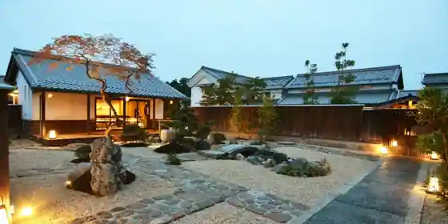
Bettei Rikka
1日1組限定 料亭旅館 寿志屋
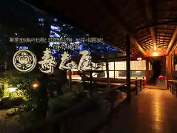
1 Nichi 1 Kumi Gentei Ryotei Ryokan Hisashi Ya
Ryokan inn in Okubo, Hinocho with one group per day and family-friendly stays.
HOTEL R9 The Yard 蒲生日野
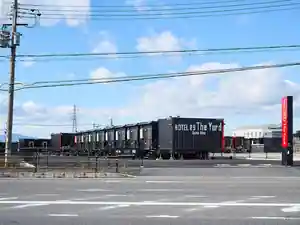
HOTEL R9 The Yard Gamo Hino
Dining
レストラン岡崎
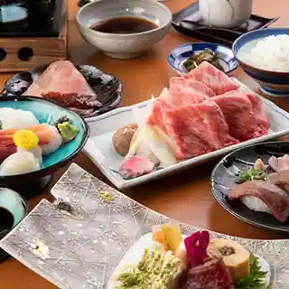
Restaurant Okazaki
石挽そば 守貞
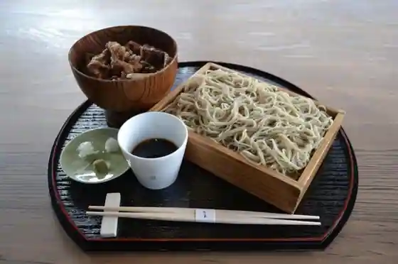
Ishi Ban Soba Morisada
日野ラーメン
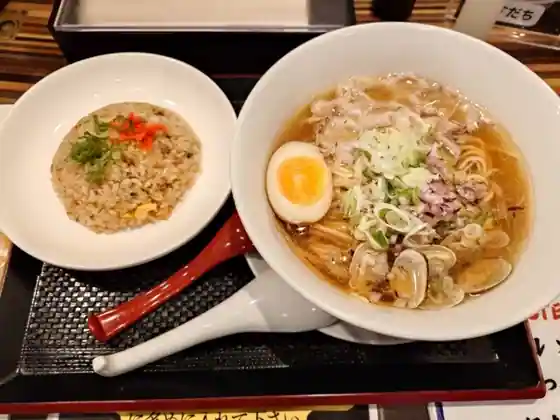
Hino Ramen
守貞cafe
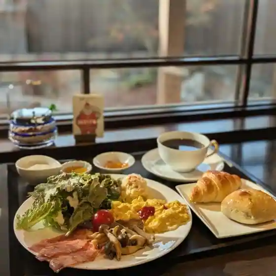
Morisada cafe
ツバメカフェ
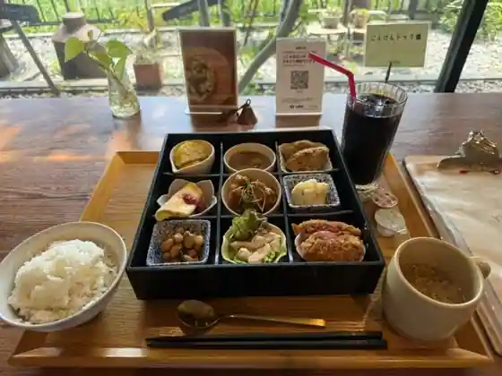
Tsubame Cafe
らっこや
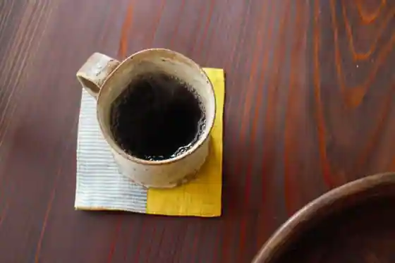
Rakkoya
タイヨウブレッズ
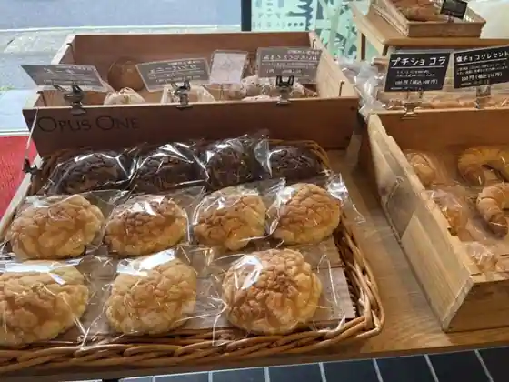
Taiyouburezzu
日野まちかど感応館 新館 みかく
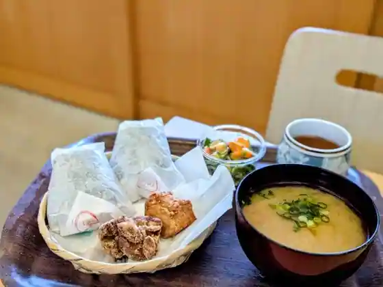
Hino Machikado Kanno Kan Shinkan Mikaku
冨士家パン
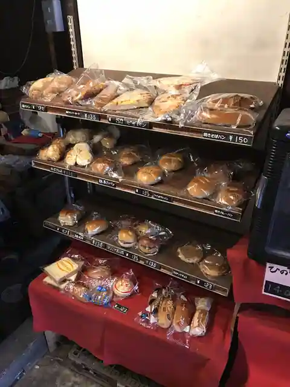
Fuji Ie Bakery
まちカフェ
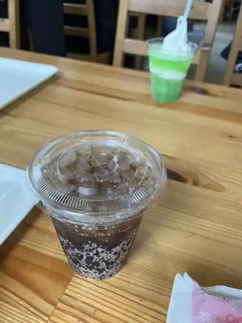
Machi Cafe
近江ヒルズゴルフ倶楽部 レストラン
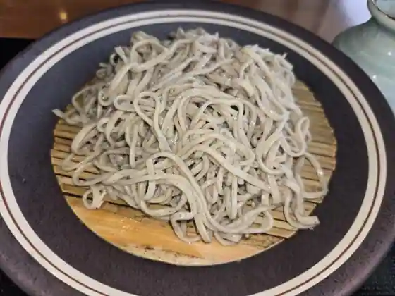
Omi Hiruzugorufu Kurabu Restaurant
エーデルワイス
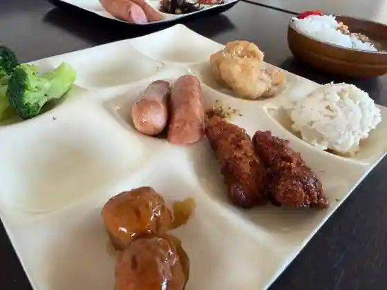
Ederuwaisu
日野ゴルフ倶楽部レストラン
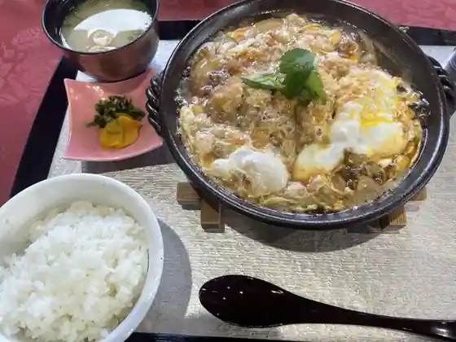
Hino Gorufu Kurabu Restaurant
氏郷庵 かどや
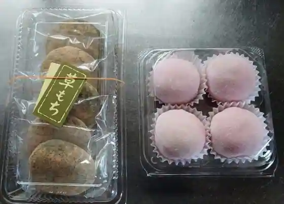
Ujisato Iori Kadoya
らーめん 塩醤 日野店
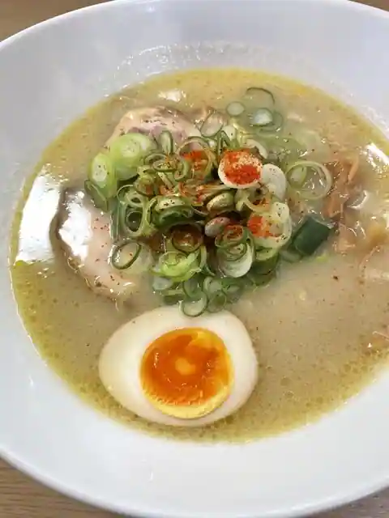
Ramen Shio Sho Hino
茶屋 茶茶丸
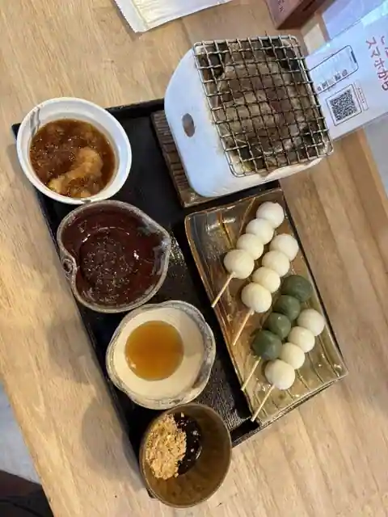
Chaya Chacha Maru
Luan
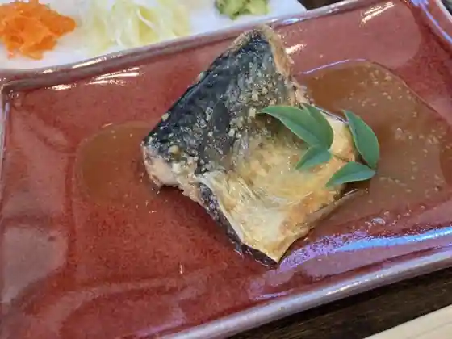
Luan
めしやたべよし
Meshiyatabeyoshi
手打ちうどん 芭蕉
Teuchi Chiudon Basho
かぎや
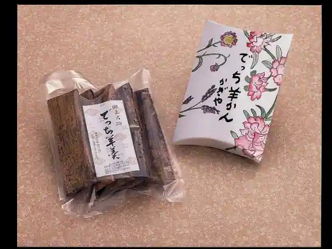
Kagiya
えびフライと抹茶専門店 はま田
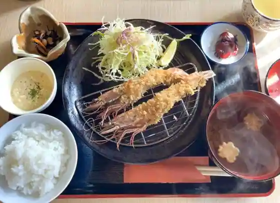
Ebi Furai To Matcha Senmon Hama Ta
創作とんかつ えふ
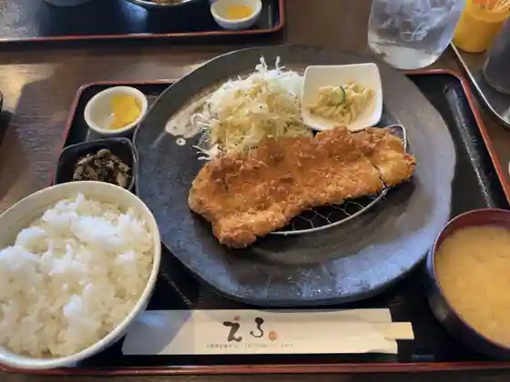
Sosaku Tonkatsu Efu
藤あられ本舗
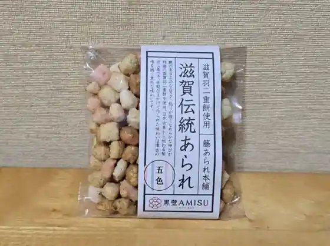
Fuji Arare Honpo
伊勢藤
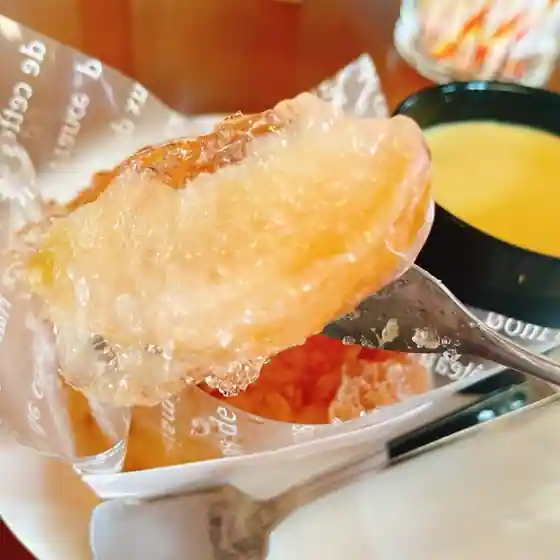
Iseto
Sights
Umami Oka Watamuki Shrine

Hitsusa Shrine

Shoboku Shrine

Hinocho Chomin Kaikan Watamuki Horu Niji

Kumo Gei Tera (Satsuki Tera)
Shoboji (Fuji no Tera)
Masaki Tera
Shigaraki In
Hinocho Kawa Dam
Otowa Castle Ruins
Nakano Castle Ruins (Hinocho Castle Ruins)
Hinocho no Streetscape
Oni Shitsu Shrine (Oni Shitsu Shu Shi no Haka)
Folk History Museum (Omi Hinocho Shonin Kan)
Shiga Nogyo Park Burume no Oka
Kama Kakeya Honshakunage Gunraku
Koteji & Oto Campground (Gurimu Boken Forest)
Shiga Prefectural Chikusan Gijutsu Shinko Center
Omi Hiruzugorufu Kurabu
Gamo Gorufu Kurabu
Hinocho Gorufu Kurabu
Hon Sei Tera Garden
Kongo Tei Tera
Saimyo Zendera
Hinocho Machikado Kanno Kan (Kyu Masano Genzo Yakuten)
NPO Hojin Hinocho Daria Sono
Omi Hinocho Shonin Furusato Kan (Kyu Sanchu Shokichi Tei)
Omitetsudo Hinocho Eki
Gamo Ujisato Ko Dozo
Zao Dam
Watamuki Yama
Omitetsudo Hinocho Ekisha (Hinocho Eki Tetsudo Museum)
Otani Park
Shakunage Gakko (Kyu Kama Kakari Shogakko)
Hinocho Town Hall